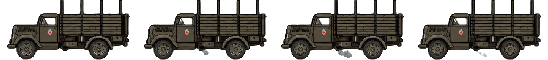

Ponovna upotreba Kluzovog atlasa: pogled ulevo, otvoreni sanduk, oznaka na vratima i animirani točkovi. Okvir za sudare ostaje 137 × 60 px; crtež se uklapa bez razvlačenja.
Ovo je izdvojeni pregled izvora. Stvarni kamion iz igre dostupan je u katalogu.
Učitavanje…

Izbor resursa i raspored · Zajednički metapodaci · GIF pregled